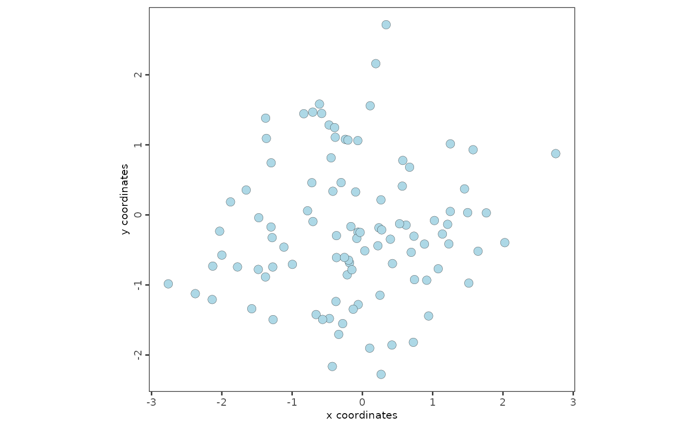

Introduction to GiottoVisuals
Source:vignettes/intro_to_GiottoVisuals.Rmd
intro_to_GiottoVisuals.RmdDescription of the module GiottoVisuals
GiottoVisuals contains the main plotting functions of Giotto Suite.
For full examples of the usage of Giotto visualizations visit http://giottosuite.com
Script Organization by Prefixes:
aux_ - auxiliary and meta functionality - aux_output.R - plot output handling - aux_save.R - plot saving - aux_defaults.R - set plotting defaults - aux_visuals.R - general auxiliary plotting functions
plot_ - general plotting functions organized by type of plot - plot_scatter.R - scatter plots - plot_violin.R - violin plots - plot_heatmap.R - heatmaps - plot_dendrogram.R - dendrograms
vis_ - specific plotting functions organized by topic - vis_hvf.R - highly variable features plots - vis_pc.R - principle components plots - vis_spatial.R - vis_spatial_in_situ.R
gg_ - ggplot2 related - gg_info_layers.R - modular internals for plotting the different layers of information
Other: - color_palettes.R - color palettes and factory functions
Package: - package_imports.R - all imports - globals.R - global variables - dd.R - dummy documentation for inheriting - zzz.R - onloads
Spatial plots
Load the package
Create a small Giotto object
expression_matrix <- matrix(rnorm(1000), nrow = 10)
colnames(expression_matrix) <- paste0("cell_", 1:100)
rownames(expression_matrix) <- paste0("gene_", 1:10)
spatial_locations <- data.frame(
cell_ID = paste0("cell_", 1:100),
sdimx = rnorm(100),
sdimy = rnorm(100)
)
giotto_object <- GiottoClass::createGiottoObject(
expression = expression_matrix,
spatial_locs = spatial_locations
)##
## no external python path or giotto
## environment was specified, will check if a
## default python path is available##
## A default python path was found: /usr/bin/python3 and will be used
## If this is not the correct python path, either##
## 1. use installGiottoEnvironment() to install
## a local miniconda python environment along with required modules##
## 2. provide an existing python path to
## python_path to use your own python path which has all modules
## installed## Set options("giotto.use_conda" = FALSE) if
## python functionalities are not needed## Warning: Some of Giotto's expected python module(s) were not found:
## pandas, igraph, leidenalg, community, networkx, sklearn
##
## ** Python path used: "/usr/bin/python3"
## (This is fine if python-based functions are not needed)## Consider to install these (optional) packages to run all possible Giotto
## commands for spatial analyses: scran MAST tiff biomaRt trendsceek multinet
## RTriangle FactoMineR## Giotto does not automatically install all these packages as they are not
## absolutely required and this reduces the number of
## dependenciesPlot the spatial locations
spatPlot2D(giotto_object)
Session Info
## R version 4.4.0 (2024-04-24)
## Platform: x86_64-pc-linux-gnu
## Running under: Ubuntu 22.04.4 LTS
##
## Matrix products: default
## BLAS: /usr/lib/x86_64-linux-gnu/openblas-pthread/libblas.so.3
## LAPACK: /usr/lib/x86_64-linux-gnu/openblas-pthread/libopenblasp-r0.3.20.so; LAPACK version 3.10.0
##
## locale:
## [1] LC_CTYPE=C.UTF-8 LC_NUMERIC=C LC_TIME=C.UTF-8
## [4] LC_COLLATE=C.UTF-8 LC_MONETARY=C.UTF-8 LC_MESSAGES=C.UTF-8
## [7] LC_PAPER=C.UTF-8 LC_NAME=C LC_ADDRESS=C
## [10] LC_TELEPHONE=C LC_MEASUREMENT=C.UTF-8 LC_IDENTIFICATION=C
##
## time zone: UTC
## tzcode source: system (glibc)
##
## attached base packages:
## [1] stats graphics grDevices utils datasets methods base
##
## other attached packages:
## [1] GiottoVisuals_0.2.3
##
## loaded via a namespace (and not attached):
## [1] gtable_0.3.5 xfun_0.44 bslib_0.7.0 ggplot2_3.5.1
## [5] htmlwidgets_1.6.4 ggrepel_0.9.5 lattice_0.22-6 vctrs_0.6.5
## [9] tools_4.4.0 generics_0.1.3 parallel_4.4.0 tibble_3.2.1
## [13] fansi_1.0.6 highr_0.11 colorRamp2_0.1.0 pkgconfig_2.0.3
## [17] Matrix_1.7-0 data.table_1.15.4 checkmate_2.3.1 RColorBrewer_1.1-3
## [21] desc_1.4.3 lifecycle_1.0.4 farver_2.1.2 stringr_1.5.1
## [25] compiler_4.4.0 deldir_2.0-4 GiottoUtils_0.1.8 textshaping_0.4.0
## [29] munsell_0.5.1 terra_1.7-78 codetools_0.2-20 scattermore_1.2
## [33] htmltools_0.5.8.1 GiottoClass_0.3.1 sass_0.4.9 yaml_2.3.8
## [37] lazyeval_0.2.2 plotly_4.10.4 pkgdown_2.0.9 pillar_1.9.0
## [41] jquerylib_0.1.4 tidyr_1.3.1 cachem_1.1.0 dbscan_1.1-12
## [45] magick_2.8.3 gtools_3.9.5 tidyselect_1.2.1 digest_0.6.35
## [49] stringi_1.8.4 reshape2_1.4.4 dplyr_1.1.4 purrr_1.0.2
## [53] labeling_0.4.3 cowplot_1.1.3 fastmap_1.2.0 grid_4.4.0
## [57] colorspace_2.1-0 cli_3.6.2 magrittr_2.0.3 utf8_1.2.4
## [61] withr_3.0.0 rappdirs_0.3.3 scales_1.3.0 backports_1.5.0
## [65] sp_2.1-4 rmarkdown_2.27 httr_1.4.7 matrixStats_1.3.0
## [69] igraph_2.0.3 reticulate_1.37.0 ragg_1.3.2 png_0.1-8
## [73] memoise_2.0.1 evaluate_0.23 knitr_1.46 viridisLite_0.4.2
## [77] rlang_1.1.3 Rcpp_1.0.12 glue_1.7.0 jsonlite_1.8.8
## [81] plyr_1.8.9 R6_2.5.1 systemfonts_1.1.0 fs_1.6.4